31421v
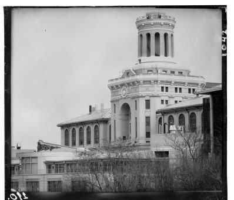
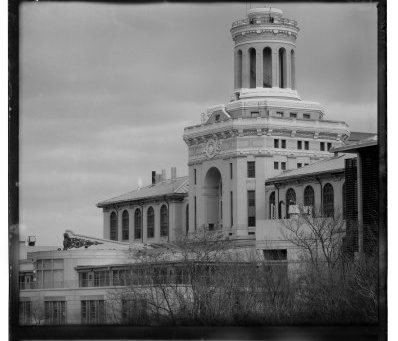
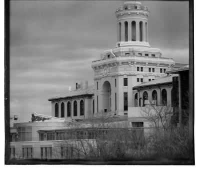
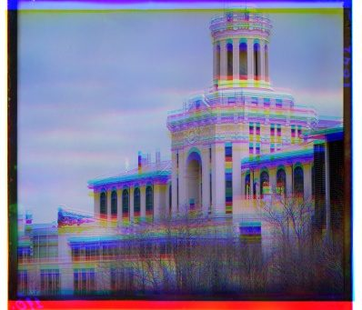
SYDE 671 · Assignment 1
Part 1
01 / Portrait
I took one photo close to the person with a wide view. Then I moved back and zoomed in. I cropped the display images so the face stays in the same place and is about the same size. The close photo makes the nose look larger. The farther photo looks more natural. Cropping changes the frame, but it does not change perspective.
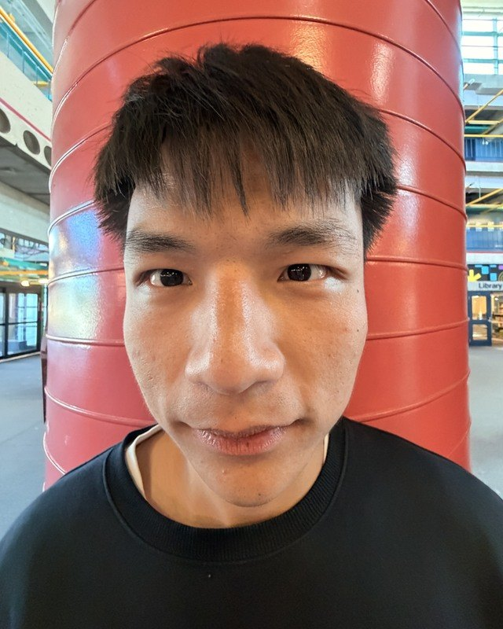
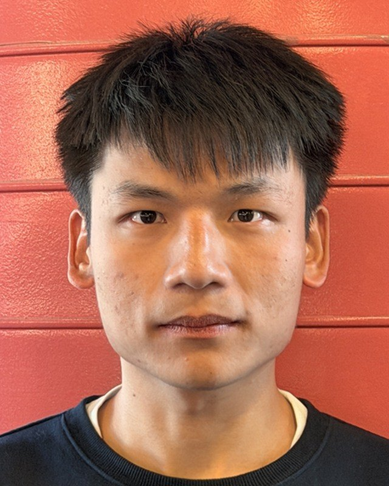
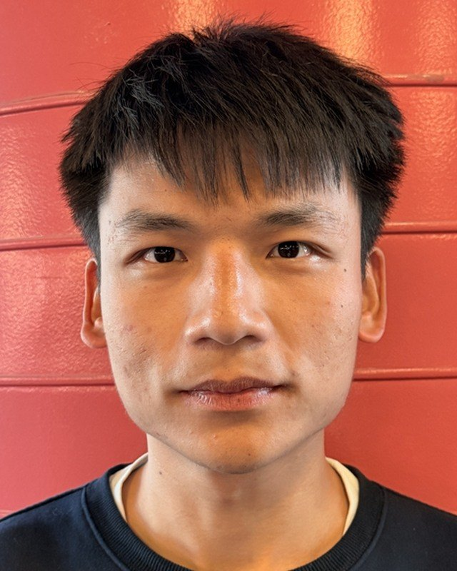
02 / Street
These photos show the same street and yellow fire hydrant. I put the hydrant in the same place and kept it about the same size in both frames. The first photo is from farther away with zoom. The second is from closer with a wider view. The street and buildings change because the camera moved.
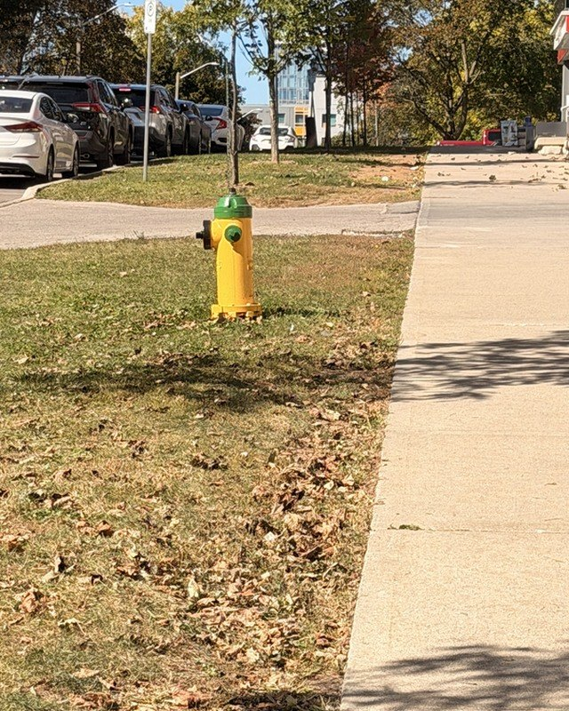
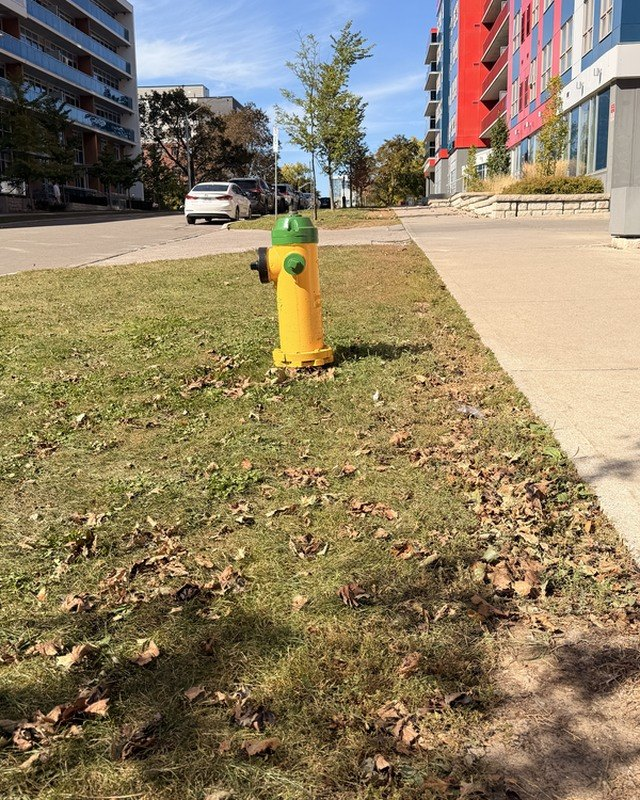
03 / Dolly zoom
I took five separate photos of the same person and door. I made a GIF in capture-time order and lightly cropped each photo so the face stays near the same place and size. The door changes size behind him. This gives an approximate dolly zoom effect.
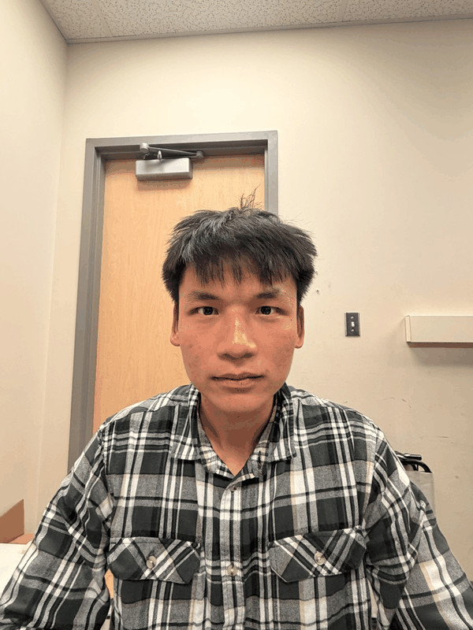
Part 2
Rebuilding colour photographs from three black-and-white glass-plate exposures.
01 / Method
Each old plate has three black-and-white photos stacked vertically. The top is blue (B), the middle is green (G), and the bottom is red (R). I keep B in place, move G and R until the details line up, and combine them into one colour photo.
I try different left-right and up-down shifts. I compare the middle of the photos to avoid damaged edges. L2 picks the shift with the smallest pixel difference. NCC picks the shift with the strongest match. The tables show how far G and R moved from B.
Large TIFF files need a wider search. I first shrink each channel and find a rough shift. I then work back toward the full-size photo and improve the shift at each size. This makes the search faster.
I combine the aligned channels and remove pixels that do not overlap. I also save a second copy with its outer border cropped automatically. The original L2 and NCC results remain in separate folders.
These show the individual grayscale exposures and their unaligned RGB stack before searching for a displacement.




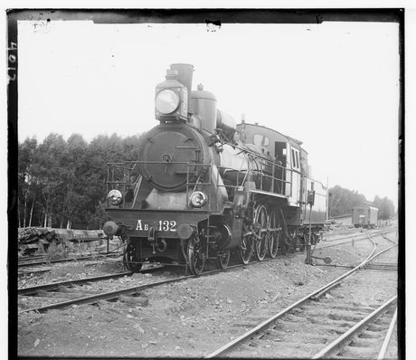
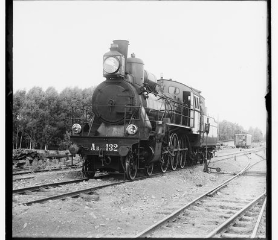
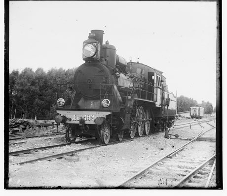
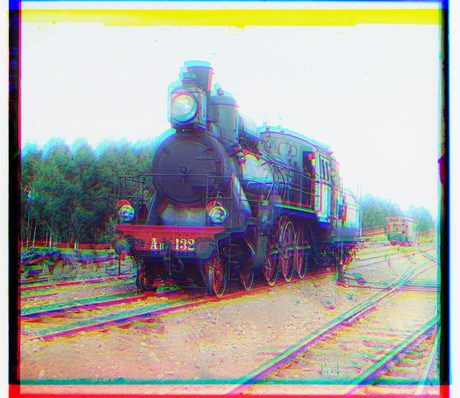
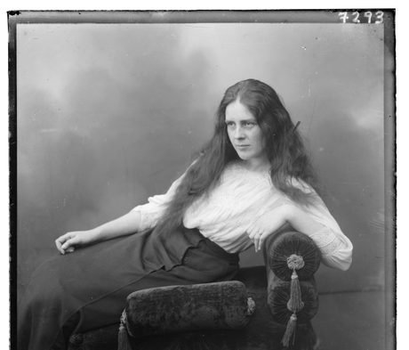
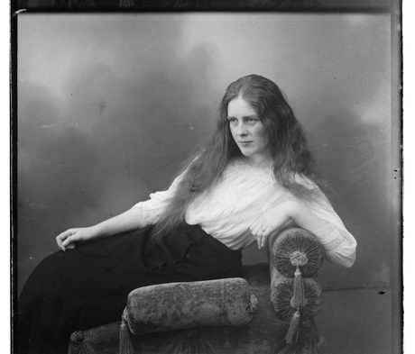
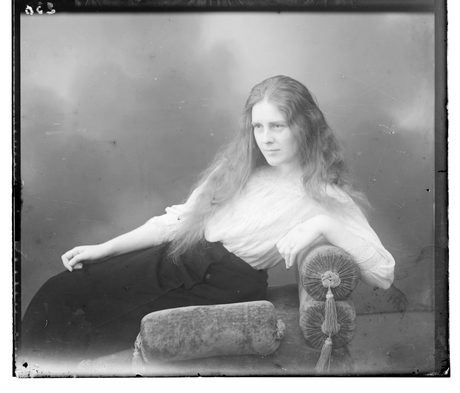
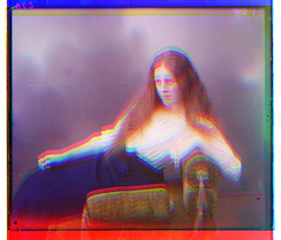
02 / Small image
I tested an exhaustive search over ±15 pixels on the low-resolution JPEG 31421v.jpg. The L2 and NCC searches both produced G = (0, 8) and R = (0, 13) relative to B. On this image, the pyramid returned the same offsets.
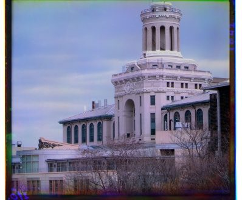

A second downsampled JPEG of the self-selected 00210u plate was also tested: both metrics found G = (-2, -2) and R = (-7, -1).
03 / Course images
Each plate was processed with both L2 and NCC using the coarse-to-fine pyramid. The gallery displays the automatically cropped copies. The offset table lists the values used to generate the full-size uncropped outputs.
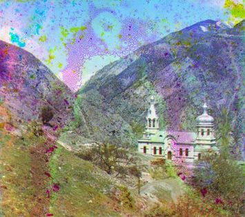

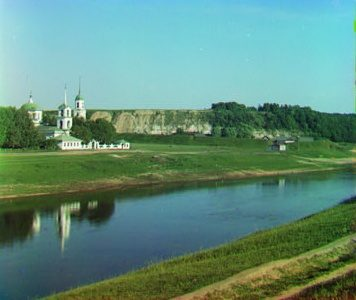

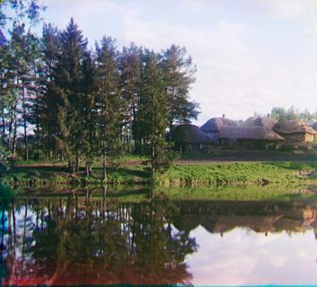

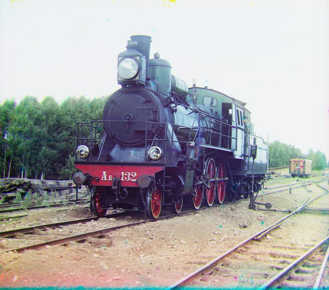

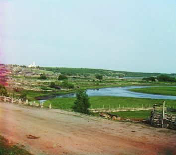


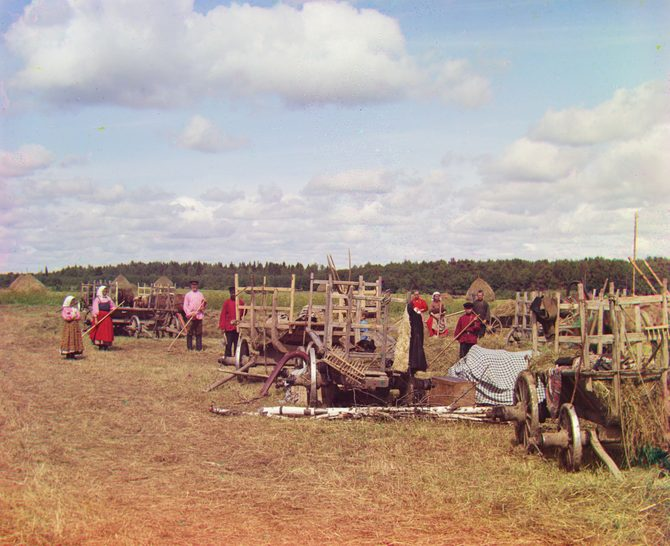
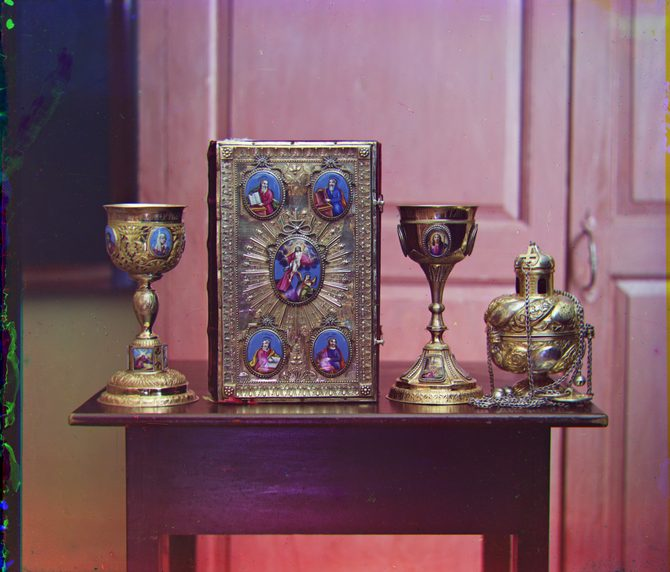


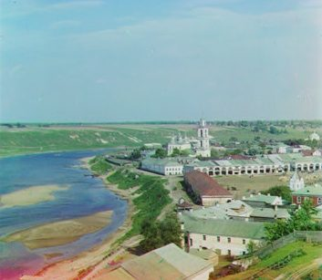

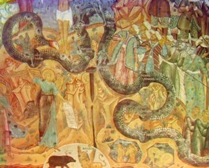

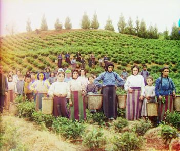
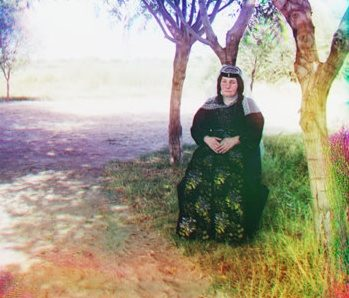

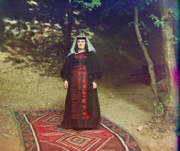

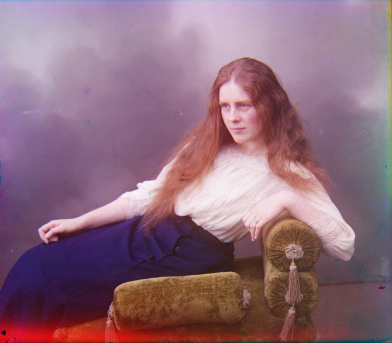

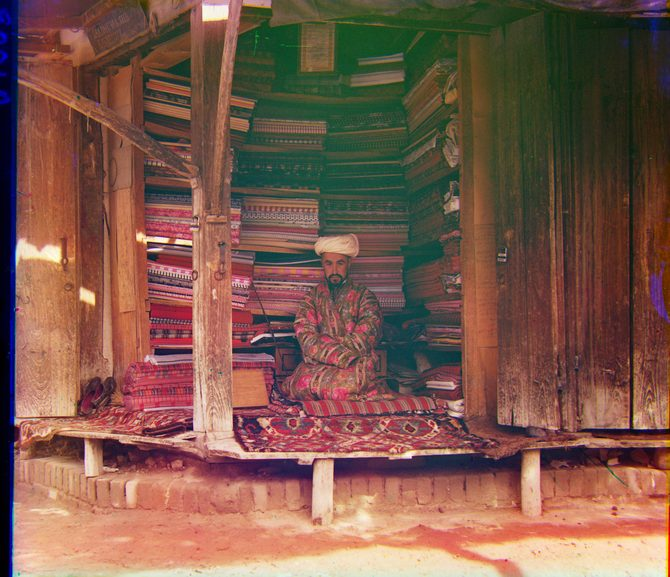
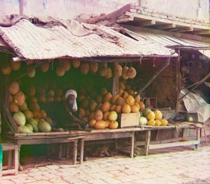

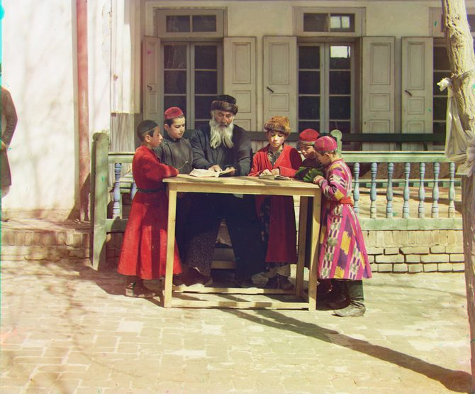


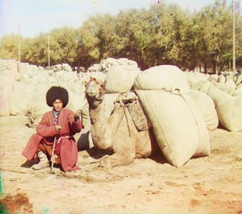
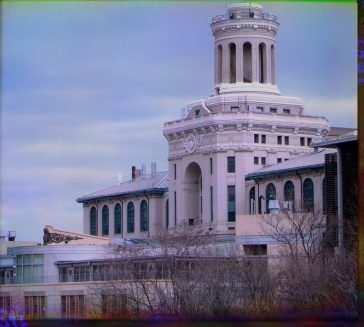

| Plate | L2 offset (dx, dy) | NCC offset (dx, dy) | ||
|---|---|---|---|---|
| G → B | R → B | G → B | R → B | |
| 00056v.jpg | (1, 6) | (1, 13) | (1, 6) | (1, 13) |
| 00125v.jpg | (2, 5) | (1, 10) | (2, 5) | (1, 10) |
| 00163v.jpg | (1, -3) | (1, -4) | (1, -3) | (1, -4) |
| 00458u.jpg | (6, 43) | (32, 87) | (6, 43) | (32, 87) |
| 00804v.jpg | (-2, 6) | (-4, 13) | (-2, 6) | (-4, 13) |
| 01007a.jpg | (13, 60) | (13, 129) | (13, 60) | (13, 129) |
| 01047u.jpg | (20, 24) | (33, 71) | (20, 24) | (33, 71) |
| 01164v.jpg | (2, 6) | (3, 11) | (2, 6) | (3, 11) |
| 01269v.jpg | (2, 6) | (3, 14) | (2, 6) | (3, 14) |
| 01522v.jpg | (2, 6) | (2, 13) | (2, 6) | (2, 13) |
| 01597v.jpg | (1, 7) | (1, 16) | (1, 7) | (1, 16) |
| 01598v.jpg | (0, 8) | (-1, 17) | (0, 8) | (-1, 17) |
| 01657u.jpg | (9, 55) | (12, 117) | (9, 55) | (12, 117) |
| 01725u.jpg | (45, 77) | (77, 162) | (45, 77) | (78, 162) |
| 01728v.jpg | (1, 8) | (1, 18) | (1, 8) | (1, 18) |
| 01861a.jpg | (38, 71) | (62, 147) | (38, 71) | (62, 147) |
| 10131v.jpg | (2, 6) | (3, 12) | (2, 6) | (3, 12) |
| 31421v.jpg | (0, 8) | (0, 13) | (0, 8) | (0, 13) |
Visible limitations. Most architectural edges align clearly. Some plates retain narrow coloured bands at the frame. The sky in 00056v remains mottled after alignment and cropping; the current translation-and-crop method does not repair blemishes inside the photograph.
04 / Prokudin-Gorskii collection
These full-resolution plates were selected from the Library of Congress Prokudin-Gorskii collection and processed with the same settings. Intermediate channel views of two plates are shown first, followed by L2 and NCC results for all three.
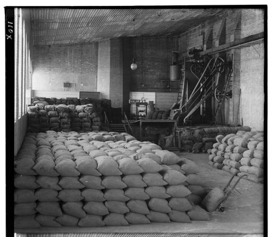
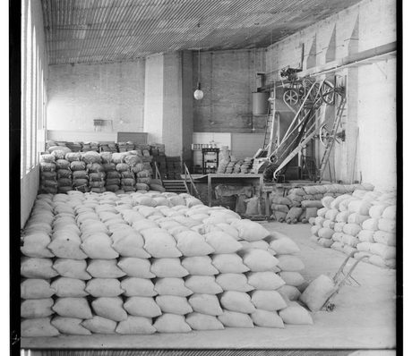
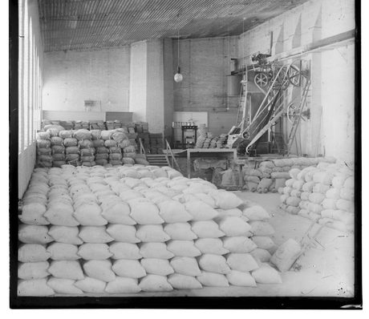
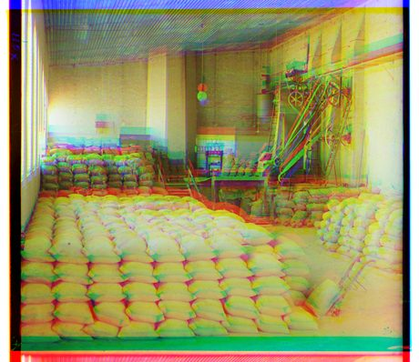
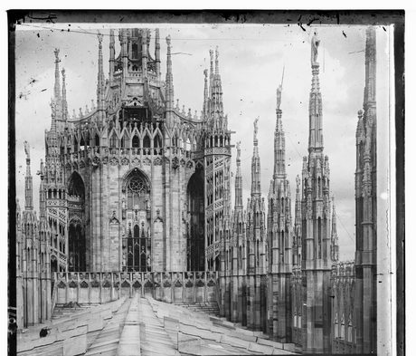
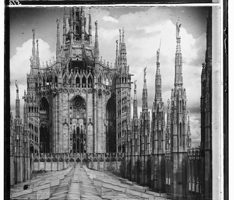
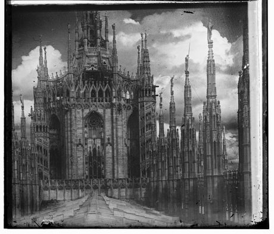
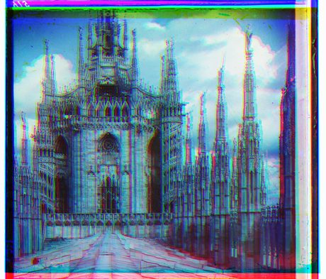
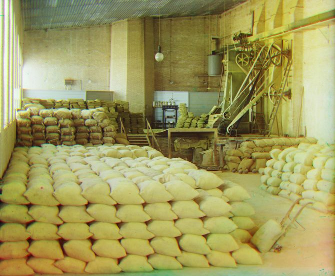
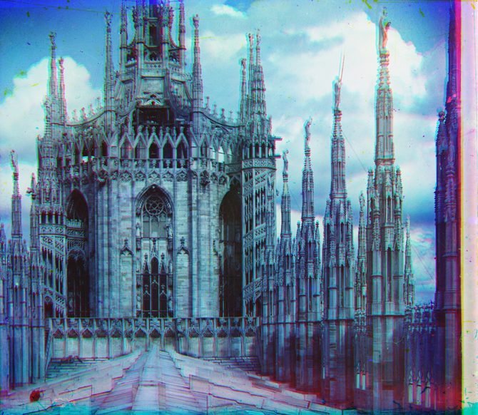
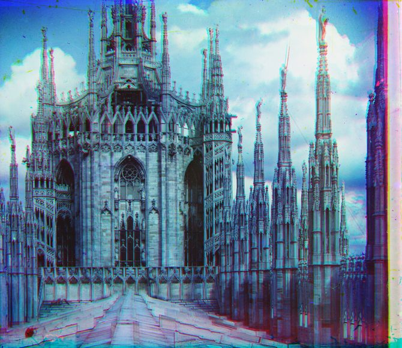

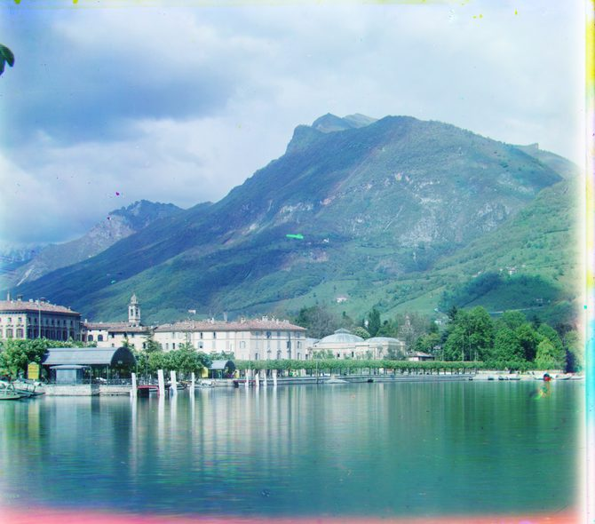
| Plate | L2 offset (dx, dy) | NCC offset (dx, dy) | ||
|---|---|---|---|---|
| G → B | R → B | G → B | R → B | |
| master-pnp-prok-00000-00092u.tif | (25, 53) | (18, 124) | (25, 53) | (17, 123) |
| master-pnp-prok-00200-00210u.tif | (-18, -10) | (-58, -1) | (-18, -10) | (-58, -2) |
| master-pnp-prok-00200-00215u.tif | (-16, 41) | (-29, 93) | (-16, 41) | (-29, 93) |
05 / Bells & Whistles
The old plate frame can leave dark, white, or colourful strips around the photo. My code looks for long, strong edges near the outside. It crops outside a detected edge. If it cannot find a clear edge, it leaves that side alone.
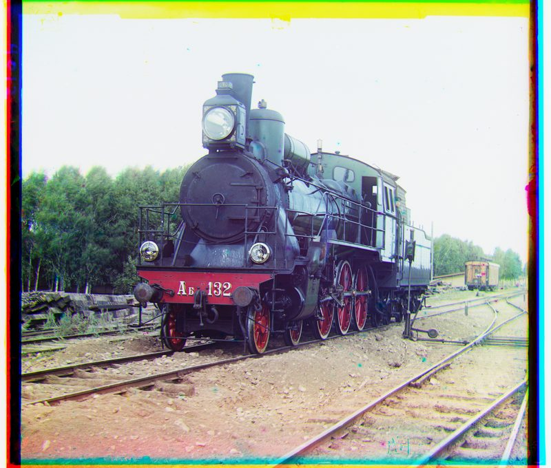
This is a heuristic, so a few coloured edge strips can remain. The uncropped L2/NCC images and all crop coordinates are retained in the accompanying output files for comparison.